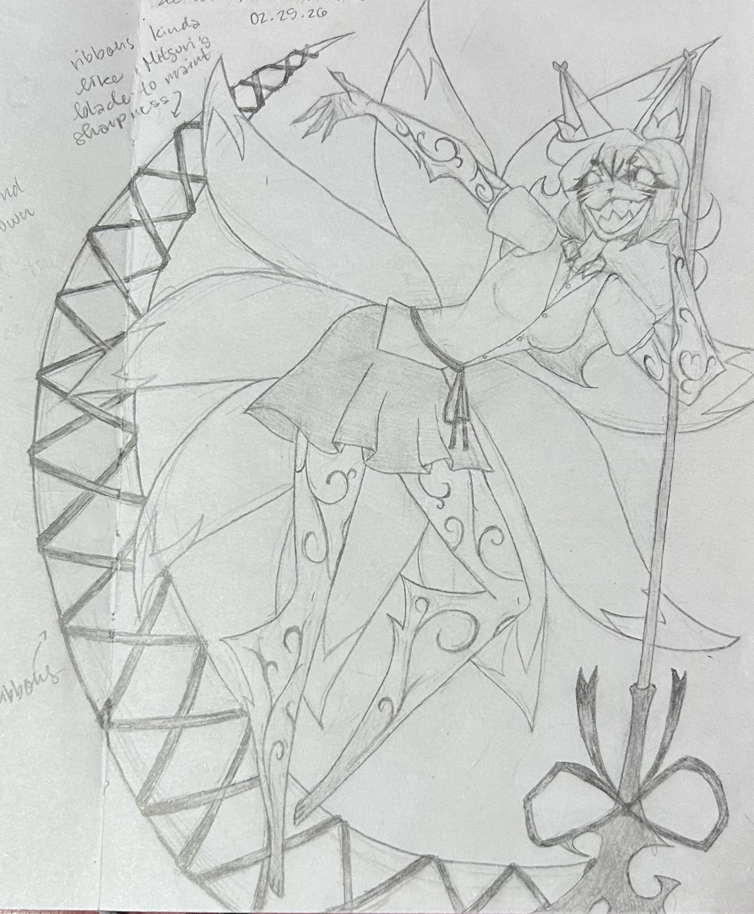
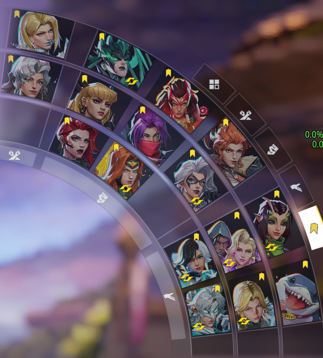

CHOIR
I have been a dedicated member of Waipahu High School's Choir for 3 years. In Senior year I will continue being a member of Choir and I will participate in my first year of Chamber Choir. Choir allows me to artistically express myself in school and cultivate my communication, organization, and collaboration skills. It's been one of the biggest joys throughout my high school experience and I sincerely hope to continue singing in college.
CYBERSECURITY AMBASSADOR
I have been an ambassador for the pathway of Cybersecurity for 2 years, soon to be 3. As an ambassador of Cybersecurity, I present to guests at Waipahu High School about the pathway of Cybersecurity, participate and attend all of the scheduled meetings, participate in mandatory trainings. As an ambassador, I also create small lessons to teach my peers Social and Emotional Learning skills.
HOBBIES
twitch.tv/luvaislingssIn my free time, I enjoy streaming on Twitch. I use this as a way to grow my content creation skills in order to reach my goal of creating educational content about psychology.

I enjoy drawing as well as other creative pursuits such as: writing, photography, digital art, painting, sculpting, and journaling. I use these activities as a way to express myself.

I like playing video games as it allows me to build on my strategic thinking, teamwork, and problem-solving skills. Gaming also allows me to see results from my decisions in real time.